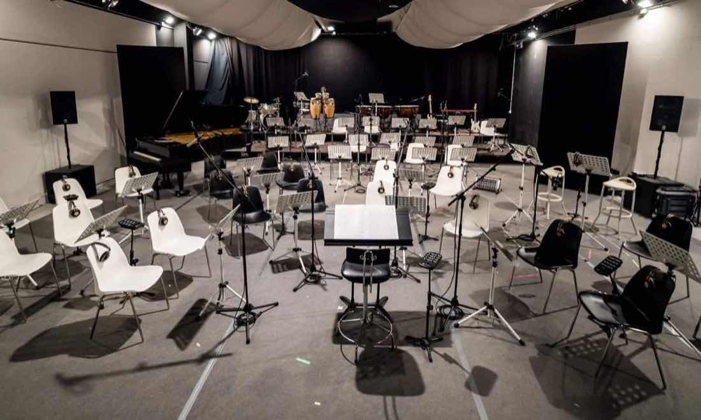
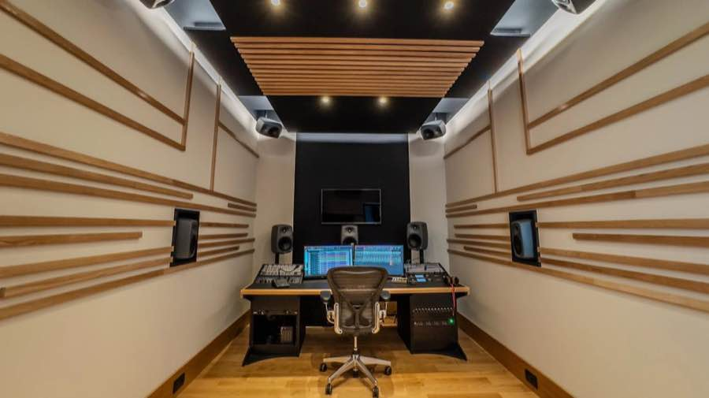
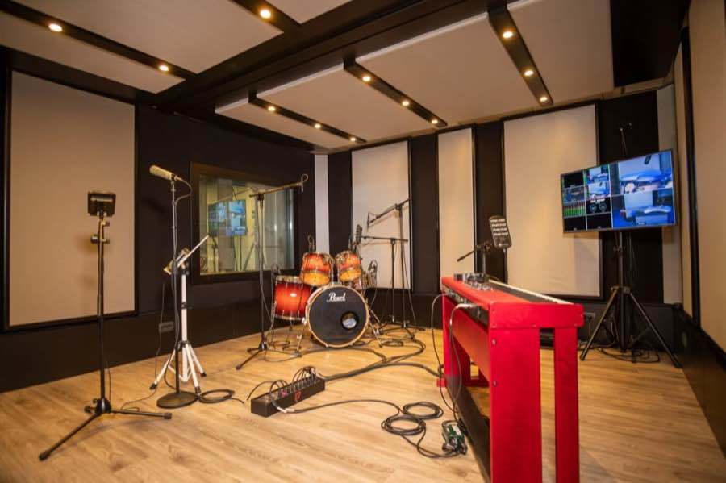
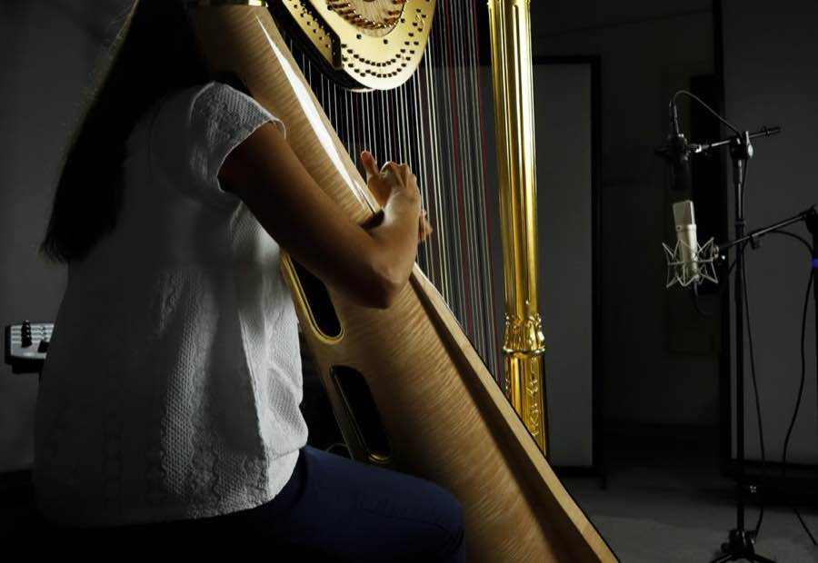
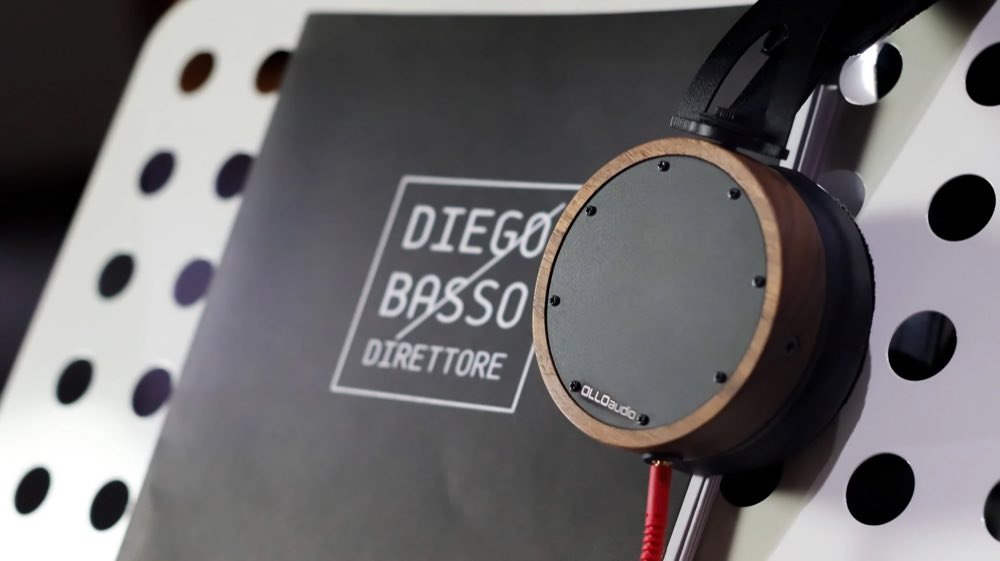

Il theatre ospita un organico orchestrale e corale, con gobos acustici configurabili sull'organico scelto.
Regia immersiva 7.1.4 con monitor Genelec, la prima del Veneto*. Delivery pronto per le piattaforme.
Regia video 6K con banco Blackmagic e 4 camere, sincronizzata con l'audio dello studio. Anche in streaming.
Live room, record booth per ensemble fino a sei musicisti e vocal booth con vetrata sul cantante.
In studio o da remoto: invii le tracce, ricevi un mix bilanciato e un master pronto per la distribuzione.
Dall'idea all'opera completa, con arrangiatori e musicisti della filiera Art Voice Academy.

La regia immersiva progettata da Donato Masci, cuore dello studio.

Acustica controllata, ideale per batteria, percussioni e band in presa diretta.

Record booth e vocal booth, con una selezione di microfoni Neumann e Manley.

Lo studio nasce dentro l'ecosistema di Art Voice Academy e del M° Diego Basso: orchestra, cori, arrangiatori e direzione sotto lo stesso tetto. Se al tuo progetto servono archi veri, un coro o un arrangiamento orchestrale, qui trovi anche chi li suona.
Orchestra Ritmico Sinfonica Italiana, Coro lirico Opera House · dir. Diego Basso
Con Roby Facchinetti · Budapest Art Orchestra · dir. Diego Basso
Con Sting, Zucchero, Chris Botti, Aida Garifullina · dir. Diego Basso
Organico, brani, periodo: bastano tre righe. Ti rispondiamo con una valutazione e un preventivo su misura.
Richiedi una valutazione del progetto